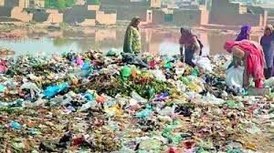

1.Almost 44% of schoolchildren in Delhi had reduced lung function compared to 25.7% in the other cities studied. Delhi kids were also 1.8 times more likely to suffer from upper respiratory symptoms.
2.In India, 627,000 premature deaths are attributable to ambient, or outdoor PM 2.5 exposure. When a household or indoor pollution is added to this figure it rises to 1.6 million.
3.One study found that over a 730 day period between 2013 and 2015 the Indian capital’s air met ‘healthy’ standards for the participate matter on only 7 days. Beijing’s air made the grade 58 times during the same period.
4.India has the dubious distinction of being home to 22 of the 50 most polluted cities globally. Instead of focusing on individual cities, the policy must take into account airsheds as a whole. No solution can be found to Delhi’s dirty air without addressing pollution in the neighbouring states of Punjab, Haryana, Uttar Pradesh and Uttarakhand.
5.Noxious gases of various types, collections of molecules that are tinier than the smallest particulates (only 2-3 atoms wide), are the other component of the air pollution mix.
6.The poor cannot afford mitigating action. Moreover, a substantial percentage of the ambient PM 2.5 concentrations in India (up to 30% according to some studies) is sourced to household pollution that escapes outdoors from dwellings.